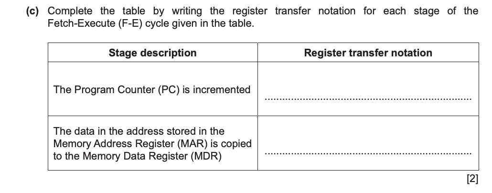
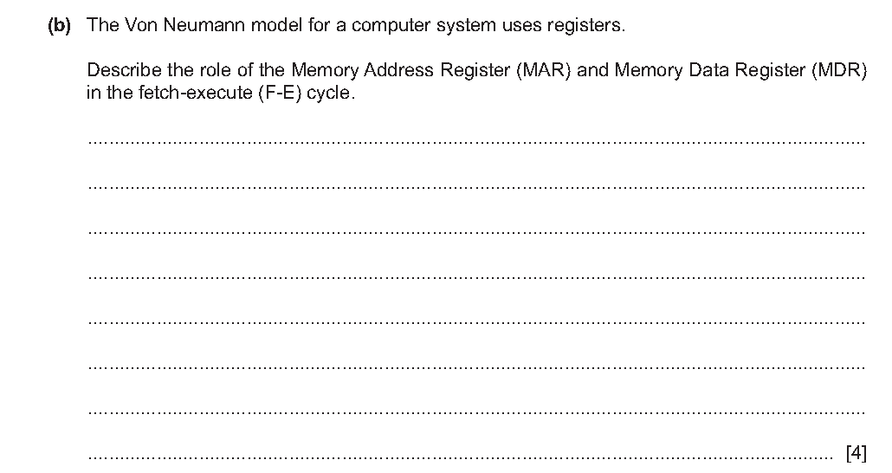
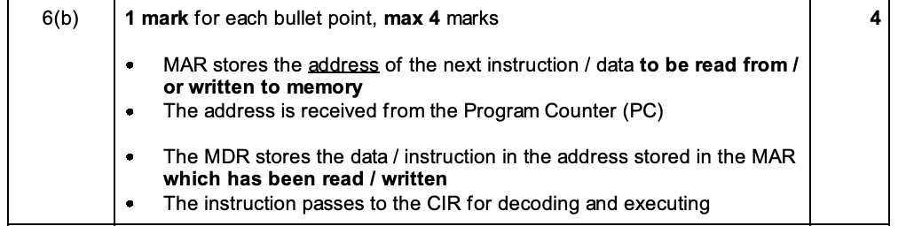

Instructions occupy addresses 0–3. Data occupy addresses 4–6. PC=0 selects the first instruction; ACC starts at 0.
Address selected (MAR)—
Value transferred (MDR)—
TransferNo external transfer
Stored answer at 60
Each instruction occupies one location. Addresses and register values are denary. Readable instructions stand for machine words. The model shows one valid order for fetch transfers and updates the zero flag after arithmetic. In memory, a green fill marks the selected address. An amber outline marks the address of the current instruction.
Changing a setting restarts this experiment. Predict the change before stepping again.
Begin at PC = 0. Instructions occupy locations 0–3. The starting data you select occupy 4 and 5 (18 and 24 by default). Watch which address is selected and what reaches MDR during the instruction fetch, operand read and result write. The diagram shows all seven registers. IX stays at 0 because this program uses direct addressing.
Cambridge register transfer notation · fetch
Official notation
Meaning in this machine
MAR ← [PC]
Copy the address in PC into MAR.
PC ← [PC] + 1
Advance PC to the next instruction. Each instruction here occupies one location.
MDR ← [[MAR]]
If MAR holds 1 and memory address 1 holds ADD 5, MDR receives the instruction ADD 5.
CIR ← [MDR]
Copy the fetched instruction from MDR into CIR.
Cambridge 9618/13, May/June 2025, Q2(a)(ii), mark scheme p. 5. Read the arrow from right to left. Single brackets give register contents; the nested brackets in [[MAR]] add a memory lookup.
PC holds 0. IX already contains the offset 2. Follow the source and destination of each transfer.
IX supplies an offset; MAR holds the resulting address. A copy leaves its source available. Only the active roles are highlighted.
Follow LDX 4 with IX = 2. The effective address is 6, so MDR and then ACC receive 42. The following CMP #42 sets the equality condition in SR.
Decode and execute ADD 5
The address bus carries 5, the control bus carries READ and the data bus carries 24 back to MDR. The clock synchronises these transfers. An instruction can take several clock cycles.
Track the working values
Completed instruction
Next PC
ACC
Memory[6]
LDD 4
1
18
0
ADD 5
2
42
0
STO 6
3
42
42
END
Control returns to the OS
42
42
This trace starts with PC = 0 and ACC = 0. Memory[4] holds 18, Memory[5] holds 24 and Memory[6] starts at 0.
Cycle review
FDE cycle review
Where does one cycle finish?
Fetch. Copy the next instruction address to MAR. Advance PC and fetch the instruction through MDR into CIR.
Decode. CU interprets the opcode and operand in CIR.
Execute. For ADD 5, read address 5, add its value to ACC and retain the result. For STO 6, send that result to memory.
At the boundary. Check for a pending interrupt before fetching the next instruction.
Original question · Cambridge 9618/13
1. Translate descriptions into register-transfer notation
Cambridge 9618/13 · May/June 2023 · 7(c) · 2 marks
Selected parts: 7(c) [2].

Official question · 9618_s23_qp_13.pdf · PDF p13 · Open full-size extract ↗Teacher solution and explanation
An arrow means assignment. Square brackets mean contents, so reading memory via an address held in MAR needs two levels of contents.
Stage
Register-transfer notation
Increment PC
PC ← [PC] + 1
Read the memory location addressed by MAR into MDR
MDR ← [[MAR]]
The inner [MAR] is the stored address. The outer brackets mean the contents of memory at that address.
Each correctly written transfer earns one mark. The second notation expresses a memory read rather than copying the address itself.
MDR ← [MAR] copies the address value, not the memory contents requested. PC ← 1 overwrites the counter instead of incrementing it.
Cambridge 9618/13 · October/November 2025 · 6(b) · 4 marks
Selected parts: 6(b) [4].

Official question · 9618_w25_qp_13.pdf · PDF p11 · Open full-size extract ↗Reading the question — teacher guidance
Connect the two registers to the fetch-execute sequence. Give the source of the address and the destination of the fetched instruction.
Solution / model answer — teacher-written
MAR holds the address of the memory location to be read or written. During instruction fetch it receives the next instruction address from PC. The instruction at that memory address is read into MDR. It then passes from MDR to CIR for decoding and execution. When executing a data read/write, MAR and MDR carry the required operand address and transferred value.
Official mark scheme

Official mark scheme · 9618_w25_ms_13.pdf · PDF p10 · Open full-size extract ↗Why this earns marks — teacher explanation
The four listed points are the MAR role, the address from PC, the MDR role and passing the instruction to CIR. The final sentence distinguishes operand access from instruction fetch; it does not add marks.
Common mistakes — teacher analysis
Do not say that the operand address always comes from PC: the PC supplies the instruction address during fetch. MDR does not select a memory location.
Additional teacher-written practiceQuestion 1 · Command word: Use4 teacher marks
Use register-transfer notation to show the fetch stage when PC=120 and Memory[120] contains LDD 500. Instructions occupy one address. Include the read control signal and state PC and CIR after the fetch.
S4.07.A02S4.07.A01
Answer and checking points — teacher-written
MAR ← [PC], so MAR becomes 120.
The CU issues a memory-read signal and MDR ← [[MAR]], loading LDD 500.
CIR ← [MDR], so CIR contains LDD 500.
PC ← [PC] + 1, so PC becomes 121; the increment may overlap other fetch transfers.
Common error: Fetch transfers the instruction to CIR, not to PC.
Question 2 · Command word: Describe4 teacher marks
Describe the decode and execute stages for CIR=STO 510 and ACC=36. Use register-transfer notation for the memory write and state whether the ACC changes.
S4.07.A01S4.07.A02
Answer and checking points — teacher-written
The CU decodes STO as a store operation with destination address 510.
MAR ← 510 and MDR ← [ACC], so MDR becomes 36.
The CU issues a write signal and [[MAR]] ← [MDR], placing 36 at address 510.
ACC remains 36; storing copies its contents to memory.
Common error: A memory write uses MDR as the transferred value, not as the destination address.
Question 3 · Command word: Explain3 teacher marks
Explain the error in the proposed fetch transfer PC ← [MDR]. Give the correct instruction destination and explain when a different value may legitimately be loaded into PC.
S4.07.A01S4.07.A02
Answer and checking points — teacher-written
During fetch, MDR contains the instruction read from memory, not normally the next instruction address.
Use CIR ← [MDR] to retain that instruction for decoding.
An executed jump may load its target address into PC to change instruction order.
Common error: Do not confuse a branch during execution with the standard fetch transfers.
Question 4 · Command word: Describe4 teacher marks
The supplied calculation starts with Memory[6]=0. Describe the operand transfers for ADD 5 and the write transfers for STO 6, then state the final memory and ACC values. Predict the incorrect Memory[6] if STO 6 instead copies its operand address into MDR before the write.
Initial ACC=0, IX=0, PC=0; comparison result unset. Memory[4]=18, Memory[5]=24, Memory[6]=0. No input is needed. Addresses are denary; each listed instruction or data item occupies one location.
000 LDD 4
001 ADD 5
002 STO 6
003 END
S4.07.A01S4.07.A02
Answer and checking points — teacher-written
After fetching ADD 5, MAR=5 and a read gives MDR=24.
The ALU combines ACC=18 with 24 and ACC becomes 42.
STO 6 sets MAR=6 and MDR=42 and uses a memory-write signal.
Correct execution gives Memory[6]=42 and ACC=42; the stated fault writes 6 to Memory[6] instead. Memory[4]=18 and Memory[5]=24 are unchanged.
Common error: Fetching STO is a read; executing it is a write.
Question 5 · Command word: State4 teacher marks
In the shared calculation, ADD 5 at address 1 has been fetched. ACC=18 and Memory[5]=24. State the values of PC, MAR, MDR and ACC after execution, and explain why PC is not the current instruction.
S4.07.A01S4.07.A02
Answer and checking points — teacher-written
PC=2 and CIR still holds ADD 5 after execution.
MAR=5 selects the operand location and MDR=24 holds its contents.
ACC=42 after addition.
PC holds the next instruction address; CIR retains the current instruction.
Common error: Do not substitute the operand address for its value.